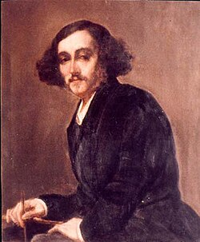
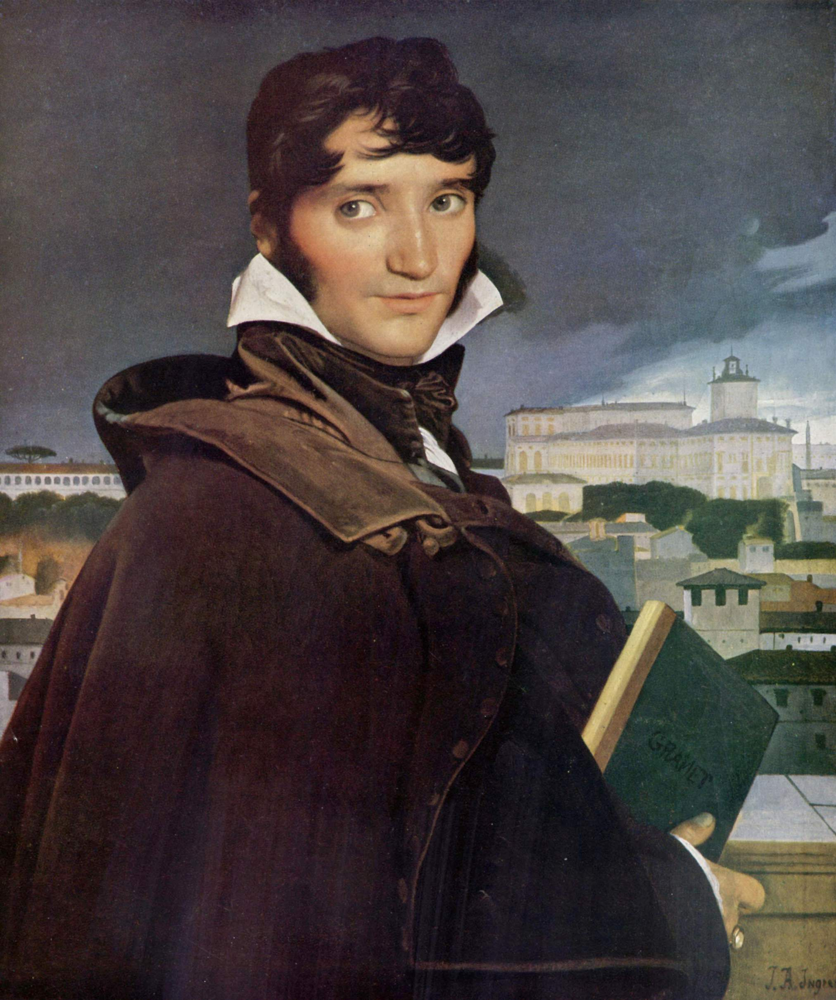
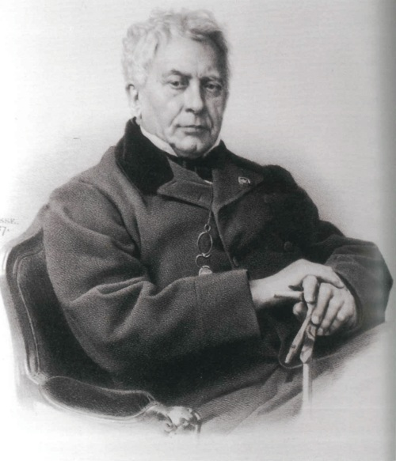
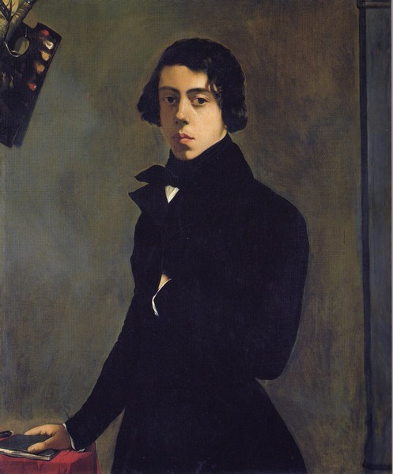
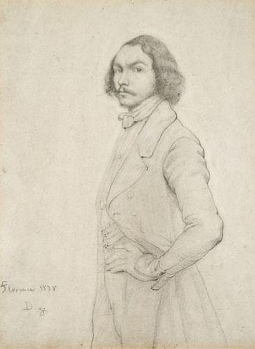
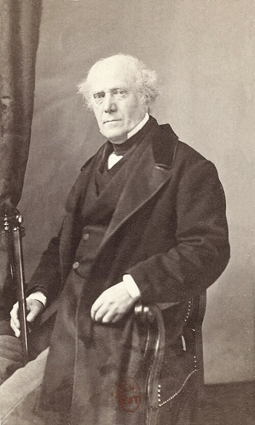
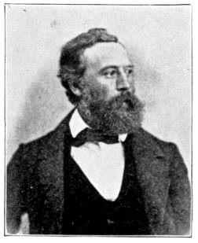
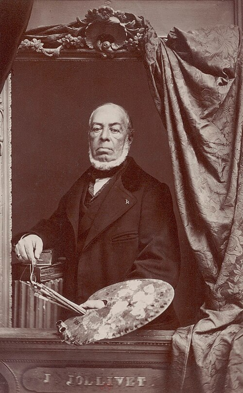
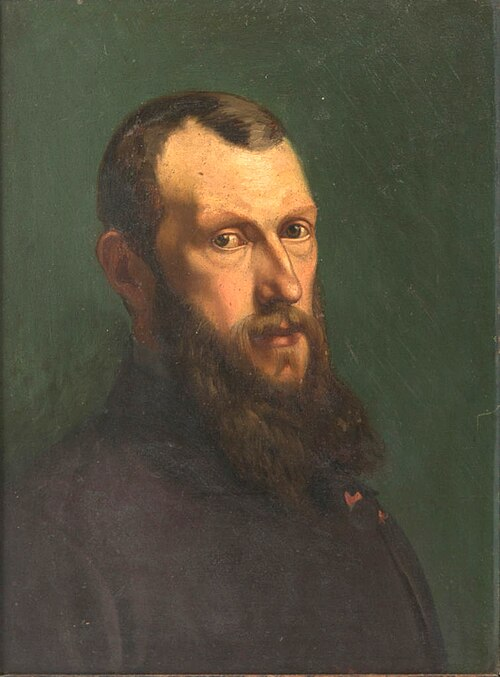
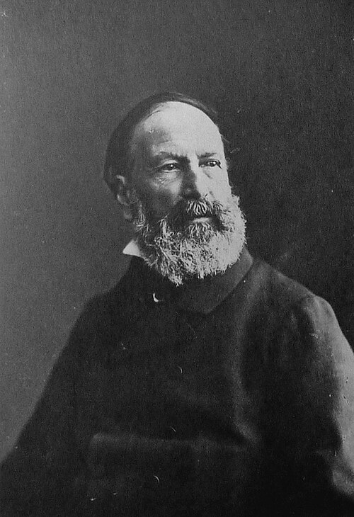

Salon de 1845
History Paintings
Tableaux d’histoire
DELACROIX
DELACROIX

M. Delacroix est décidément le peintre le plus original des temps anciens et des temps modernes. Cela est ainsi, qu’y faire ? Aucun des amis de M. Delacroix, et des plus enthousiastes, n’a osé le dire simplement, crûment, impudemment, comme nous. Grâce à la justice tardive des heures qui amortissent les rancunes, les étonnements et les mauvais vouloirs, et emportent lentement chaque obstacle dans la tombe, nous ne sommes plus au temps où le nom de M. Delacroix était un motif à signe de croix pour les arriéristes , et un symbole de ralliement pour toutes les oppositions, intelligentes ou non ; ces beaux temps sont passés. M. Delacroix restera toujours un peu contesté, juste autant qu’il faut pour ajouter quelques éclairs à son auréole. Et tant mieux ! Il a le droit d’être toujours jeune, car il ne nous a pas trompés, lui, il ne nous a pas menti comme quelques idoles ingrates que nous avons portées dans nos panthéons. M. Delacroix n’est pas encore de l’Académie, mais il en fait partie moralement ; dès longtemps il a tout dit, dit tout ce qu’il faut pour être le premier — c’est convenu ; — il ne lui reste plus — prodigieux tour de force d’un génie sans cesse en quête du neuf — qu’à progresser dans la voie du bien — où il a toujours marché.
M. Delacroix is decidedly the most original painter of ancient and modern times. So it is; what can one do? Not one of M. Delacroix’s friends, even the most enthusiastic, has dared to say it simply, bluntly, impudently, as we do. Thanks to the tardy justice of time, which dulls resentments, astonishments and ill will and slowly carries every obstacle into the grave, we are no longer in the days when the name of M. Delacroix made reactionaries cross themselves and served as a rallying symbol for every opposition, intelligent or otherwise. Those fine days are past. M. Delacroix will always remain somewhat disputed—just enough to add a few flashes to his halo. So much the better. He has the right to remain forever young, for he has not deceived us; he has not lied to us like certain ungrateful idols we raised into our pantheons. M. Delacroix is not yet in the Academy, but morally he belongs to it. He has long since said everything, everything required to be first—that is agreed. Nothing remains to him—prodigious feat for a genius forever seeking the new—but to advance along the road of excellence, the road he has always followed.
M. Delacroix a envoyé cette année quatre tableaux :
M. Delacroix sent four paintings this year:
1 o La madeleine dans le désert
1. MARY MAGDALENE IN THE DESERT
C’est une tête de femme renversée dans un cadre très-étroit. À droite dans le haut, un petit bout de ciel ou de rocher — quelque chose de bleu ; — les yeux de la Madeleine sont fermés, la bouche est molle et languissante, les cheveux épars. Nul, à moins de la voir, ne peut imaginer ce que l’artiste a mis de poésie intime, mystérieuse et romantique dans cette simple tête. Elle est peinte presque par hachures comme beaucoup de peintures de M. Delacroix ; les tons, loin d’être éclatants ou intenses, sont très-doux et très-modérés ; l’aspect est presque gris, mais d’une harmonie parfaite. Ce tableau nous démontre une vérité soupçonnée depuis longtemps et plus claire encore dans un autre tableau dont nous parlerons tout à l’heure ; c’est que M. Delacroix est plus fort que jamais, et dans une voie de progrès sans cesse renaissante, c’est-à-dire qu’il est plus que jamais harmoniste.
It is the head of a woman thrown back within a very narrow frame. At the upper right is a little patch of sky or rock—something blue. The Magdalene’s eyes are closed, her mouth soft and languishing, her hair loose. No one who has not seen it can imagine the intimate, mysterious and romantic poetry the artist has placed in this simple head. It is painted almost in hatchings, like many of M. Delacroix’s pictures; the tones, far from brilliant or intense, are very soft and restrained. The effect is almost gray, but perfectly harmonious. This picture demonstrates a truth long suspected and made clearer still in another picture we shall discuss shortly: M. Delacroix is stronger than ever and follows a path of continually renewed progress—that is, he is more than ever a master of harmony.
2 o Dernières paroles de marc-aurèle
2. THE LAST WORDS OF MARCUS AURELIUS
Marc-Aurèle lègue son fils aux stoïciens. — Il est à moitié nu et mourant, et présente le jeune Commode, jeune, rose, mou et voluptueux et qui a l’air de s’ennuyer, à ses sévères amis groupés autour de lui dans des attitudes désolées.
Marcus Aurelius entrusts his son to the Stoics. Half-naked and dying, he presents the young Commodus—young, pink, soft, voluptuous, and looking bored—to his stern friends, who stand around him in attitudes of grief.
Tableau splendide, magnifique, sublime, incompris. — Un critique connu a fait au peintre un grand éloge d’avoir placé Commode, c’est-à-dire l’avenir, dans la lumière ; les stoïciens, c’est-à-dire le passé, dans l’ombre ; — que d’esprit ! Excepté deux figures dans la demi-teinte, tous les personnages ont leur portion de lumière. Cela nous rappelle l’admiration d’un littérateur républicain qui félicitait sincèrement le grand Rubens d’avoir, dans un de ses tableaux officiels de la galerie Médicis, débraillé l’une des bottes et le bas de Henri IV , trait de satire indépendante, coup de griffe libéral contre la débauche royale. Rubens sans-culotte ! ô critique ! ô critiques !…
A splendid, magnificent, sublime, misunderstood picture. A well-known critic greatly praised the painter for placing Commodus—that is, the future—in the light, and the Stoics—that is, the past—in shadow. What wit! Except for two figures in half-tone, every person has his share of light. It reminds us of the admiration of a republican man of letters who sincerely congratulated the great Rubens for having, in one of his official Medici Gallery paintings, left one of Henry IV’s boots and stockings disordered—a stroke of independent satire, a liberal scratch against royal debauchery. Rubens a sans-culotte! O criticism! O critics!
Nous sommes ici en plein Delacroix, c’est-à-dire que nous avons devant les yeux l’un des spécimens les plus complets de ce que peut le génie dans la peinture.
Here we are in Delacroix through and through: before our eyes is one of the fullest examples of what genius can accomplish in painting.
Cette couleur est d’une science incomparable, il n’y a pas une seule faute, — et, néanmoins, ce ne sont que tours de force — tours de forces invisibles à l’œil inattentif, car l’harmonie est sourde et profonde ; la couleur, loin de perdre son originalité cruelle dans cette science nouvelle et plus complète, est toujours sanguinaire et terrible. — Cette pondération du vert et du rouge plaît à notre âme. M. Delacroix a même introduit dans ce tableau, à ce que nous croyons du moins, quelques tons dont il n’avait pas encore l’usage habituel. — Ils se font bien valoir les uns les autres. — Le fond est aussi sérieux qu’il le fallait pour un pareil sujet.
The color displays incomparable knowledge; there is not a single fault, and yet it is all feats of strength—feats invisible to the inattentive eye, because the harmony is muted and profound. Far from losing its cruel originality within this newer and fuller science, the color remains bloody and terrible. This balancing of green and red pleases our soul. M. Delacroix has even introduced into this picture, or so we believe, several tones he had not previously used as a matter of habit. They set one another off admirably. The background is as grave as such a subject required.
Enfin, disons-le, car personne ne le dit, ce tableau est parfaitement bien dessiné, parfaitement bien modelé. — Le public se fait-il bien une idée de la difficulté qu’il y a à modeler avec de la couleur ? La difficulté est double, — modeler avec un seul ton, c’est modeler avec une estompe, la difficulté est simple ; — modeler avec de la couleur, c’est dans un travail subit, spontané, compliqué, trouver d’abord la logique des ombres et de la lumière, ensuite la justesse et l’harmonie du ton ; autrement dit, c’est, si l’ombre est verte et une lumière rouge, trouver du premier coup une harmonie de vert et de rouge, l’un obscur, l’autre lumineux, qui rendent l’effet d’un objet monochrome et tournant .
Finally, let us say it, since no one else does: this picture is perfectly drawn and perfectly modeled. Does the public understand how difficult it is to model with color? The difficulty is double. To model with a single tone is to model with a stump; the difficulty is simple. To model with color is, in a sudden, spontaneous, complicated operation, first to find the logic of shadow and light, then the accuracy and harmony of tone. In other words, if the shadow is green and the light red, one must immediately discover a harmony of green and red—one dark, the other luminous—that gives the effect of a single-colored solid turning in space.
Ce tableau est parfaitement bien dessiné. Faut-il, à propos de cet énorme paradoxe, de ce blasphème impudent, répéter, réexpliquer ce que M. Gautier s’est donné la peine d’expliquer dans un de ses feuilletons de l’année dernière, à propos de M. Couture — car M. Th. Gautier, quand les œuvres vont bien à son tempérament et à son éducation littéraires, commente bien ce qu’il sent juste — à savoir qu’il y a deux genres de dessins, le dessin des coloristes et le dessin des dessinateurs ? Les procédés sont inverses ; mais on peut bien dessiner avec une couleur effrénée, comme on peut trouver des masses de couleur harmonieuses, tout en restant dessinateur exclusif.
The picture is perfectly drawn. Must we, in support of this enormous paradox, this impudent blasphemy, repeat and explain again what M. Gautier took the trouble to explain in one of last year’s feuilletons about M. Couture? For M. Théophile Gautier, when works suit his literary temperament and education, comments very well upon what he rightly feels: namely, that there are two kinds of drawing, the drawing of colorists and the drawing of draftsmen. Their procedures are opposite; yet one may draw well with unbridled color, just as one may discover harmonious masses of color while remaining exclusively a draftsman.
Donc, quand nous disons que ce tableau est bien dessiné, nous ne voulons pas faire entendre qu’il est dessiné comme un Raphaël ; nous voulons dire qu’il est dessiné d’une manière impromptue et spirituelle ; que ce genre de dessin, qui a quelque analogie avec celui de tous les grands coloristes, de Rubens par exemple, rend bien, rend parfaitement le mouvement, la physionomie, le caractère insaisissable et tremblant de la nature, que le dessin de Raphaël ne rend jamais. — Nous ne connaissons, à Paris, que deux hommes qui dessinent aussi bien que M. Delacroix, l’un d’une manière analogue, l’autre dans une méthode contraire. — L’un est M. Daumier, le caricaturiste ; l’autre, M. Ingres, le grand peintre, l’adorateur rusé de Raphaël. — Voilà certes qui doit stupéfier les amis et les ennemis, les séides et les antagonistes ; mais avec une attention lente et studieuse, chacun verra que ces trois dessins différents ont ceci de commun, qu’ils rendent parfaitement et complétement le côté de la nature qu’ils veulent rendre, et qu’ils disent juste ce qu’ils veulent dire. — Daumier dessine peut-être mieux que Delacroix, si l’on veut préférer les qualités saines, bien portantes, aux facultés étranges et étonnantes d’un grand génie malade de génie ; M. Ingres, si amoureux du détail, dessine peut-être mieux que tous les deux, si l’on préfère les finesses laborieuses à l’harmonie de l’ensemble, et le caractère du morceau au caractère de la composition, mais…
Thus, when we say this picture is well drawn, we do not mean that it is drawn like a Raphael. We mean that it is drawn in an impromptu and spirited manner; that this kind of drawing, related to that of all the great colorists—Rubens, for example—renders movement, expression and the elusive, trembling character of nature perfectly, something Raphael’s drawing never does. In Paris we know only two men who draw as well as M. Delacroix, one in a related manner, the other by an opposite method. One is M. Daumier, the caricaturist; the other M. Ingres, the great painter and cunning worshiper of Raphael. This will surely astonish friends and enemies, followers and opponents. But with slow, studious attention everyone will see that these three different kinds of drawing have this in common: each renders completely the aspect of nature it means to render, and says exactly what it means to say. Daumier perhaps draws better than Delacroix, if one prefers sound, healthy qualities to the strange and astonishing powers of a great genius sick with genius. M. Ingres, so enamored of detail, perhaps draws better than either, if one prefers laborious refinements to the harmony of the whole and the character of the fragment to that of the composition—but…
3 o une sibylle qui montre le rameau d’or
3. A SIBYL SHOWING THE GOLDEN BOUGH
C’est encore d’une belle et originale couleur. — La tête rappelle un peu l’indécision charmante des dessins sur Hamlet. — Comme modelé et comme pâte, c’est incomparable ; l’épaule nue vaut un Corrége.
This too has beautiful and original color. The head somewhat recalls the charming irresolution of the Hamlet drawings. In modeling and handling it is incomparable; the bare shoulder is worthy of Correggio.
4 o le sultan du maroc entouré de sa garde et de ses officiers
4. THE SULTAN OF MOROCCO SURROUNDED BY HIS GUARD AND OFFICERS
Voilà le tableau dont nous voulions parler tout à l’heure quand nous affirmions que M. Delacroix avait progressé dans la science de l’harmonie. — En effet, déploya-t-on jamais en aucun temps une plus grande coquetterie musicale ? Véronèse fut-il jamais plus féerique ? Fit-on jamais chanter sur une toile de plus capricieuses mélodies ? un plus prodigieux accord de tons nouveaux, inconnus, délicats, charmants ? Nous en appelons à la bonne foi de quiconque connaît son vieux Louvre ; — qu’on cite un tableau de grand coloriste, où la couleur ait autant d’esprit que dans celui de M. Delacroix. — Nous savons que nous serons compris d’un petit nombre, mais cela nous suffit. — Ce tableau est si harmonieux, malgré la splendeur des tons, qu’il en est gris — gris comme la nature — gris comme l’atmosphère de l’été, quand le soleil étend comme un crépuscule de poussière tremblante sur chaque objet. — Aussi ne l’aperçoit-on pas du premier coup ; — ses voisins l’assomment. — La composition est excellente ; — elle a quelque chose d’inattendu parce qu’elle est vraie et naturelle…
This is the picture we meant earlier when we said that M. Delacroix had advanced in the science of harmony. Indeed, was greater musical coquetry ever displayed at any time? Was Veronese ever more enchanted? Were more capricious melodies ever made to sing upon a canvas? Was there ever a more prodigious accord of new, unknown, delicate and charming tones? We appeal to the good faith of anyone who knows the old Louvre: let him name a painting by a great colorist in which color has as much wit as in M. Delacroix’s. We know that few will understand us, but that is enough. Despite the splendor of its tones, the picture is so harmonious that it becomes gray—gray like nature, gray like the summer atmosphere when the sun spreads a twilight of trembling dust over every object. For that reason one does not notice it at first; its neighbors batter it into submission. The composition is excellent. It has something unexpected because it is true and natural…
P. S. On dit qu’il y a des éloges qui compromettent, et que mieux vaut un sage ennemi…, etc. Nous ne croyons pas, nous, qu’on puisse compromettre le génie en l’expliquant.
P.S. It is said that certain praises compromise their object, and that a wise enemy is better, and so forth. We do not believe that genius can be compromised by being explained.
HORACE VERNET
HORACE VERNET

Cette peinture africaine est plus froide qu’une belle journée d’hiver. — Tout y est d’une blancheur et d’une clarté désespérantes. L’unité, nulle ; mais une foule de petites anecdotes intéressantes — un vaste panorama de cabaret ; — en général, ces sortes de décorations sont divisées en manière de compartiments ou d’actes, par un arbre, une grande montagne, une caverne, etc. M. Horace Vernet a suivi la même méthode ; grâce à cette méthode de feuilletoniste, la mémoire du spectateur retrouve ses jalons, à savoir : un grand chameau, des biches, une tente, etc… — vraiment c’est une douleur que de voir un homme d’esprit patauger dans l’horrible. — M. Horace Vernet n’a donc jamais vu les Rubens, les Véronèse, les Tintoret, les Jouvenet, morbleu !…
This African painting is colder than a fine winter day. Everything in it is of a desperate whiteness and clarity. Unity: none; but a multitude of interesting little anecdotes—a vast tavern panorama. In general such decorations are divided into compartments or acts by a tree, a large mountain, a cave, and so forth. M. Horace Vernet has followed the same method. Thanks to this feuilletonist’s method, the spectator’s memory recovers its landmarks: a large camel, some does, a tent, and so on. It is truly painful to see a man of intelligence wallowing in the horrible. Has M. Horace Vernet never seen Rubens, Veronese, Tintoretto or Jouvenet, by thunder?
WILLIAM HAUSSOULLIER
WILLIAM HAUSSOULLIER

Que M. William Haussoullier ne soit point surpris, d’abord, de l’éloge violent que nous allons faire de son tableau, car ce n’est qu’après l’avoir consciencieusement et minutieusement analysé que nous en avons pris la résolution ; en second lieu, de l’accueil brutal et malhonnête que lui fait un public français, et des éclats de rire qui passent devant lui. Nous avons vu plus d’un critique, important dans la presse, lui jeter en passant son petit mot pour rire — que l’auteur n’y prenne pas garde. — Il est beau d’avoir un succès à la Saint-Symphorien.
Let M. William Haussoullier not be surprised, first, by the violent praise we are about to give his painting, for we resolved upon it only after conscientious and minute analysis; nor, secondly, by the brutal and discourteous reception given it by the French public and by the bursts of laughter that pass before it. We have seen more than one critic of importance in the press toss it a little joke in passing. The author should pay no attention. It is splendid to achieve a Saint-Symphorien kind of success.
Il y a deux manières de devenir célèbre : par agrégation de succès annuels, et par coup de tonnerre. Certes le dernier moyen est le plus original. Que l’auteur songe aux clameurs qui accueillirent le Dante et Virgile , et qu’il persévère dans sa propre voie ; bien des railleries malheureuses tomberont encore sur cette œuvre, mais elle restera dans la mémoire de quiconque a de l’œil et du sentiment ; puisse son succès aller toujours croissant, car il doit y avoir succès.
There are two ways to become famous: by accumulating annual successes, or by a thunderclap. The latter is certainly the more original. Let the artist remember the clamor that greeted Dante and Virgil, and persevere in his own path. Many wretched jokes will still fall upon this work, but it will remain in the memory of everyone who has an eye and sensibility. May its success continue to grow, for success it must have.
Après les tableaux merveilleux de M. Delacroix, celui-ci est véritablement le morceau capital de l’Exposition ; disons mieux, il est, dans un certain sens toutefois, le tableau unique du Salon de 1845 ; car M. Delacroix est depuis longtemps un génie illustre, une gloire acceptée et accordée ; il a donné cette année quatre tableaux ; M. William Haussoullier hier était inconnu, et il n’en a envoyé qu’un.
After M. Delacroix’s marvelous pictures, this is truly the capital work of the exhibition. Better still, in a certain sense it is the one unique picture of the Salon of 1845. M. Delacroix has long been an illustrious genius, an accepted and acknowledged glory, and he sent four pictures this year. Yesterday M. William Haussoullier was unknown, and he sent only one.
Nous ne pouvons nous refuser le plaisir d’en donner d’abord une description, tant cela nous paraît gai et délicieux à faire. C’est la Fontaine de Jouvence ; sur le premier plan trois groupes ; — à gauche, deux jeunes gens, ou plutôt deux rajeunis, les yeux dans les yeux, causent de fort près, et ont l’air de faire l’amour allemand. — Au milieu, une femme vue de dos, à moitié nue, bien blanche, avec des cheveux bruns crespelés, jase aussi en souriant avec son partenaire ; elle a l’air plus sensuel, et tient encore un miroir où elle vient de se regarder ; — enfin, dans le coin à droite, un homme vigoureux et élégant — une tête ravissante, le front un peu bas, les lèvres un peu fortes — pose en souriant son verre sur le gazon, pendant que sa compagne verse quelque élixir merveilleux dans le verre d’un long et mince jeune homme debout devant elle.
We cannot deny ourselves the pleasure of describing it first, so cheerful and delightful does the task appear. It is The Fountain of Youth. In the foreground are three groups. At left, two young people—or rather two people made young again—look into one another’s eyes and converse at very close range; they seem to be making love in the German fashion. In the center, a half-naked, very white woman seen from behind, with crimped brown hair, smiles and chats with her companion. She appears more sensual and still holds the mirror in which she has just looked at herself. Finally, in the right-hand corner, a vigorous and elegant man—with a delightful head, a slightly low forehead and rather full lips—smilingly sets his glass upon the grass, while his companion pours some marvelous elixir into the glass of a tall, slender young man standing before her.
Derrière eux, sur le second plan, un autre groupe étendu tout de son long sur l’herbe : — ils s’embrassent. — Sur le milieu du second, une femme nue et debout, tord ses cheveux d’où dégouttent les derniers pleurs de l’eau salutaire et fécondante ; une autre, nue à moitié couchée, semble comme une chrysalide, encore enveloppée dans la dernière vapeur de sa métamorphose. — Ces deux femmes, d’une forme délicate, sont vaporeusement, outrageusement blanches ; elles commencent pour ainsi dire à reparaître. — Celle qui est debout a l’avantage de séparer et de diviser symétriquement le tableau. Cette statue, presque vivante, est d’un excellent effet, et sert, par son contraste, les tons violents du premier plan, qui en acquièrent encore plus de vigueur. La fontaine, que quelques critiques trouveront sans doute un peu Séraphin , cette fontaine fabuleuse nous plaît ; elle se partage en deux nappes, et se découpe, se fend en franges vacillantes et minces comme l’air. — Dans un sentier tortueux qui conduit l’œil jusqu’au fond du tableau, arrivent, courbés et barbus, d’heureux sexagénaires. — Le fond de droite est occupé par des bosquets où se font des ballets et des réjouissances.
Behind them, in the middle distance, another group lies stretched at full length on the grass: they are kissing. At the center of the middle distance, a standing nude woman wrings her hair, from which the last tears of the health-giving and fertilizing water drip. Another, naked and half-reclining, seems like a chrysalis still wrapped in the final vapor of her transformation. These two delicately formed women are vaporously, outrageously white; they are, so to speak, beginning to reappear. The standing woman has the advantage of separating and symmetrically dividing the picture. This almost living statue produces an excellent effect and, through contrast, strengthens the violent tones of the foreground. The fountain, which certain critics will doubtless find somewhat like a puppet theater, pleases us. It divides into two sheets and breaks into wavering fringes as thin as air. Along a winding path that leads the eye to the back of the picture come happy sexagenarians, stooped and bearded. The right background is filled with groves where dances and festivities are taking place.
Le sentiment de ce tableau est exquis ; dans cette composition l’on aime et l’on boit, — aspect voluptueux — mais l’on boit et l’on aime d’une manière très-sérieuse, presque mélancolique. Ce ne sont pas des jeunesses fougueuses et remuantes, mais de secondes jeunesses qui connaissent le prix de la vie et qui en jouissent avec tranquillité.
The feeling of the picture is exquisite. In this composition people love and drink—a voluptuous appearance—but they drink and love in a very serious, almost melancholy manner. These are not impetuous and restless youths, but second youth, which knows the value of life and enjoys it calmly.
Cette peinture a, selon nous, une qualité très-importante, dans un musée surtout — elle est très-voyante. — Il n’y a pas moyen de ne pas la voir. La couleur est d’une crudité terrible, impitoyable, téméraire même, si l’auteur était un homme moins fort ; mais… elle est distinguée , mérite si couru par MM. de l’école d’Ingres. — Il y a des alliances de tons heureuses ; il se peut que l’auteur devienne plus tard un franc coloriste. — Autre qualité énorme et qui fait les hommes, les vrais hommes, cette peinture a la foi — elle a la foi de sa beauté, — c’est de la peinture absolue, convaincue, qui crie : je veux, je veux être belle, et belle comme je l’entends, et je sais que je ne manquerai pas de gens à qui plaire.
In our opinion this painting possesses a very important quality, especially in a museum: it is highly conspicuous. There is no way not to see it. The color is terribly raw, pitiless, even rash, were the artist a weaker man; but it is distinguished, that merit so avidly pursued by the gentlemen of the school of Ingres. There are happy alliances of tone; the painter may later become a frank colorist. Another enormous quality, the quality that makes men—real men—is that this painting has faith. It believes in its own beauty. It is absolute, convinced painting, crying: I will, I will be beautiful, beautiful as I understand beauty, and I know I shall not lack people to please.
Le dessin, on le devine, est aussi d’une grande volonté et d’une grande finesse ; les têtes ont un joli caractère. — Les attitudes sont toutes bien trouvées. — L’élégance et la distinction sont partout le signe particulier de ce tableau.
The drawing, as one may guess, also shows great determination and great refinement. The heads have attractive character. Every attitude is well found. Elegance and distinction are everywhere the picture’s special mark.
Cette œuvre aura-t-elle un succès prompt ? Nous l’ignorons. — Un public a toujours, il est vrai, une conscience et une bonne volonté qui le précipitent vers le vrai ; mais il faut le mettre sur une pente et lui imprimer l’élan, et notre plume est encore plus ignorée que le talent de M. Haussoullier.
Will the work enjoy immediate success? We do not know. The public always has, it is true, a conscience and good will that hurl it toward truth; but it must be placed upon a slope and given momentum, and our pen is even less known than M. Haussoullier’s talent.
Si l’on pouvait, à différentes époques et à diverses reprises, faire une exhibition de la même œuvre, nous pourrions garantir la justice du public envers cet artiste.
If the same work could be exhibited repeatedly at different times, we could guarantee that the public would do justice to this artist.
Du reste, sa peinture est assez osée pour bien porter les affronts, et elle promet un homme qui sait assumer la responsabilité de ses œuvres ; il n’a donc qu’à faire un nouveau tableau.
In any case, his painting is bold enough to bear insults well, and it promises a man who knows how to assume responsibility for his works. He need only paint another picture.
Oserons-nous, après avoir si franchement déployé nos sympathies (mais notre vilain devoir nous oblige à penser à tout), oserons-nous dire que le nom de Jean Bellin et de quelques Vénitiens des premiers temps nous a traversé la mémoire, après notre douce contemplation ? M. Haussoullier serait-il de ces hommes qui en savent trop long sur leur art ? C’est là un fléau bien dangereux, et qui comprime dans leur naïveté bien d’excellents mouvements. Qu’il se défie de son érudition, qu’il se défie même de son goût — mais c’est là un illustre défaut, — et ce tableau contient assez d’originalité pour promettre un heureux avenir.
After displaying our sympathies so frankly—though our unpleasant duty forces us to think of everything—shall we dare say that the names of Giovanni Bellini and several early Venetians crossed our minds after our pleasant contemplation? Could M. Haussoullier be one of those men who know too much about their art? That is a dangerous scourge, restraining many excellent impulses in their naivety. Let him distrust his learning, and even his taste—though that is an illustrious defect. The picture contains enough originality to promise a fortunate future.
DECAMPS
DECAMPS

Approchons vite — car les Decamps allument la curiosité d’avance — on se promet toujours d’être surpris — on s’attend à du nouveau — M. Decamps nous a ménagé cette année une surprise qui dépasse toutes celles qu’il a travaillées si longtemps avec tant d’amour, voir les Crochets et les Cimbres ; M. Decamps a fait du Raphaël et du Poussin. — Eh ! mon Dieu ! — oui.
Let us hurry nearer—for a Decamps excites curiosity in advance. One always expects surprise, one expects something new. This year M. Decamps has prepared a surprise surpassing all those he labored over so lovingly for so long—witness The Hooks and The Cimbri. M. Decamps has made Raphael and Poussin. Good heavens—yes.
Hâtons-nous de dire, pour corriger ce que cette phrase a d’exagéré, que jamais imitation ne fut mieux dissimulée ni plus savante — il est bien permis, il est louable d’imiter ainsi.
Let us hasten to correct the exaggeration in that phrase by saying that imitation was never more skillfully concealed or more learned. One is certainly permitted—indeed praised—to imitate in this fashion.
Franchement — malgré tout le plaisir qu’on a à lire dans les œuvres d’un artiste les diverses transformations de son art et les préoccupations successives de son esprit, nous regrettons un peu l’ancien Decamps.
Frankly, despite all the pleasure of reading in an artist’s works the various transformations of his art and the successive preoccupations of his mind, we somewhat regret the former Decamps.
Il a, avec un esprit de choix qui lui est particulier, entre tous les sujets bibliques, mis la main sur celui qui allait le mieux à la nature de son talent ; c’est l’histoire étrange, baroque, épique, fantastique, mythologique de Samson, l’homme aux travaux impossibles, qui dérangeait les maisons d’un coup d’épaule — de cet antique cousin d’Hercule et du baron de Munchhausen. — Le premier de ces dessins — l’apparition de l’ange dans un grand paysage — a le tort de rappeler des choses que l’on connaît trop — ce ciel cru, ces quartiers de roches, ces horizons graniteux sont sus dès longtemps par toute la jeune école — et quoiqu’il soit vrai de dire que c’est M. Decamps qui les lui a enseignés, nous souffrons devant un Decamps de penser à M. Guignet.
With his peculiar gift for selection, among all biblical subjects he chose the one best suited to his talent: the strange, baroque, epic, fantastic, mythological history of Samson, the man of impossible labors who knocked houses out of place with his shoulder—an ancient cousin of Hercules and Baron Munchausen. The first of these drawings—the angel’s appearance in a broad landscape—has the fault of recalling things too well known. That raw sky, those blocks of rock, those granite horizons have long been mastered by the entire young school. Though it is true that M. Decamps taught them, it pains us, before a Decamps, to think of M. Guignet.
Plusieurs de ces compositions ont, comme nous l’avons dit, une tournure très-italienne — et ce mélange de l’esprit des vieilles et grandes écoles avec l’esprit de M. Decamps, intelligence très-flamande à certains égards, a produit un résultat des plus curieux. — Par exemple, on trouvera à côté de figures qui affectent, heureusement du reste, une allure de grands tableaux, une idée de fenêtre ouverte par où le soleil vient éclairer le parquet de manière à réjouir le Flamand le plus étudieur . — Dans le dessin qui représente l’ébranlement du Temple, dessin composé comme un grand et magnifique tableau, — gestes, attitudes d’histoire — on reconnaît le génie de Decamps tout pur dans cette ombre volante de l’homme qui enjambe plusieurs marches, et qui reste éternellement suspendu en l’air. — Combien d’autres n’auraient pas songé à ce détail, ou du moins l’auraient rendu d’une autre manière ! mais M. Decamps aime prendre la nature sur le fait, par son côté fantastique et réel à la fois — dans son aspect le plus subit et le plus inattendu.
Several of these compositions, as we have said, have a very Italian cast. The mingling of the spirit of the old great schools with M. Decamps’s spirit—an intelligence in certain respects highly Flemish—has produced one of the most curious results. Beside figures that successfully assume the bearing of large-scale paintings, for example, one finds an open window through which sunlight falls upon the floor in a way that would delight the most studious Fleming. In the drawing of the destruction of the Temple, composed like a large and magnificent picture, with the gestures and attitudes of history painting, one recognizes Decamps’s pure genius in the flying shadow of the man striding over several steps, eternally suspended in the air. How many others would never have thought of this detail, or at least would have rendered it differently! M. Decamps loves to catch nature in the act, from its aspect at once fantastic and real, at its most sudden and unexpected.
Le plus beau de tous est sans contredit le dernier — le Samson aux grosses épaules, le Samson invincible est condamné à tourner une meule — sa chevelure, ou plutôt sa crinière n’est plus — ses yeux sont crevés — le héros est courbé au labeur comme un animal de trait — la ruse et la trahison ont dompté cette force terrible qui aurait pu déranger les lois de la nature. — À la bonne heure — voilà du Decamps, du vrai et du meilleur — nous retrouvons donc enfin cette ironie, ce fantastique, j’allais presque dire ce comique que nous regrettions tant à l’aspect des premiers. — Samson tire la machine comme un cheval ; il marche pesamment et voûté avec une naïveté grossière — une naïveté de lion dépossédé ; la tristesse résignée et presque l’abrutissement du roi des forêts, à qui l’on ferait traîner une charrette de vidanges ou du mou pour les chats.
The finest of all is unquestionably the last. Broad-shouldered, invincible Samson is condemned to turn a mill. His hair—or rather his mane—is gone; his eyes have been put out; the hero bends to labor like a draught animal. Cunning and betrayal have subdued the terrible strength that might have disturbed the laws of nature. Excellent—here is Decamps, the true Decamps at his best. At last we recover that irony, that fantasy, I almost said that comedy, which we so regretted in the first drawings. Samson pulls the machine like a horse. He walks heavily and stooped, with a coarse naivety—the naivety of a dispossessed lion, the resigned sadness and almost brutish state of the king of beasts forced to drag a refuse cart or carry offal for cats.
Un surveillant, un geôlier, sans doute, dans une attitude attentive et faisant silhouette sur un mur, dans l’ombre, au premier plan — le regarde faire. — Quoi de plus complet que ces deux figures et cette meule ? Quoi de plus intéressant ? Il n’était même pas besoin de mettre ces curieux derrière les barreaux d’une ouverture — la chose était déjà belle et assez belle.
A supervisor, no doubt a jailer, watches him work from the shadowed foreground, standing attentively in silhouette against a wall. What could be more complete than these two figures and this mill? What could be more compelling? It was not even necessary to place those onlookers behind the bars of an opening. The thing was already beautiful—beautiful enough.
M. Decamps a donc fait une magnifique illustration et de grandioses vignettes à ce poëme étrange de Samson — et cette série de dessins où l’on pourrait peut-être blâmer quelques murs et quelques objets trop bien faits, et le mélange minutieux et rusé de la peinture et du crayon — est, à cause même des intentions nouvelles qui y brillent, une des plus belles surprises que nous ait faites cet artiste prodigieux, qui, sans doute, nous en prépare d’autres.
M. Decamps has therefore produced a magnificent illustration, a set of grand vignettes for the strange poem of Samson. In this series of drawings one might perhaps criticize a few walls and objects for being too perfectly made, and the minute, cunning mixture of painting and pencil. Yet because of the new intentions that shine within it, the series is one of the most beautiful surprises given us by this prodigious artist, who is doubtless preparing others.
ROBERT FLEURY
ROBERT-FLEURY
M. Robert Fleury reste toujours semblable et égal à lui-même, c’est-à-dire un très-bon et très-curieux peintre. — Sans avoir précisément un mérite éclatant, et, pour ainsi dire, un genre de génie involontaire comme les premiers maîtres, il possède tout ce que donnent la volonté et le bon goût. La volonté fait une grande partie de sa réputation comme de celle de M. Delaroche. — Il faut que la volonté soit une faculté bien belle et toujours bien fructueuse, pour qu’elle suffise à donner un cachet, un style quelquefois violent à des œuvres méritoires, mais d’un ordre secondaire, comme celles de M. Robert Fleury. — C’est à cette volonté tenace, infatigable et toujours en haleine, que les tableaux de cet artiste doivent leur charme presque sanguinaire. — Le spectateur jouit de l’effort et l’œil boit la sueur. — C’est là surtout, répétons-le, le caractère principal et glorieux de cette peinture, qui, en somme, n’est ni du dessin, quoique M. Robert Fleury dessine très-spirituellement, ni de la couleur, quoiqu’il colore vigoureusement ; cela n’est ni l’un ni l’autre, parce que cela n’est pas exclusif. — La couleur est chaude, mais la manière est pénible ; le dessin habile, mais non pas original.
M. Robert-Fleury remains always like and equal to himself: a very good and very curious painter. Without precisely possessing a dazzling merit, an involuntary kind of genius like the foremost masters, he possesses everything that will and good taste can give. Will accounts for a large part of his reputation, as it does for M. Delaroche’s. Will must be a beautiful and always fruitful faculty if it alone can give a stamp, sometimes a violent style, to meritorious but secondary works such as M. Robert-Fleury’s. His pictures owe their almost bloodthirsty charm to this tenacious, tireless will, always kept in breath. The spectator enjoys the effort and the eye drinks the sweat. This, let us repeat, is the principal and glorious character of a painting that in the end is neither drawing—although M. Robert-Fleury draws with great spirit—nor color—although he colors vigorously. It is neither because it is not exclusive. The color is warm, but the manner laborious; the drawing skillful, but not original.
Son Marino Faliero rappelle imprudemment un magnifique tableau qui fait partie de nos plus chers souvenirs. — Nous voulons parler du Marino Faliero de M. Delacroix. — La composition était analogue ; mais combien plus de liberté, de franchise et d’abondance !…
His Marino Faliero imprudently recalls a magnificent picture among our dearest memories: M. Delacroix’s Marino Faliero. The composition was analogous, but how much more freedom, frankness and abundance there were in Delacroix!
Dans l’ Auto-da-fé, nous avons remarqué avec plaisir quelques souvenirs de Rubens, habilement transformés. — Les deux condamnés qui brûlent, et le vieillard qui s’avance les mains jointes. — C’est encore là, cette année, le tableau le plus original de M. Robert Fleury. — La composition en est excellente, toutes les intentions louables, presque tous les morceaux sont bien réussis. — Et c’est là surtout que brille cette faculté de volonté cruelle et patiente, dont nous parlions tout à l’heure. — Une seule chose est choquante, c’est la femme demi-nue, vue de face au premier plan ; elle est froide à force d’efforts dramatiques. — De ce tableau, nous ne saurions trop louer l’exécution de certains morceaux. — Ainsi certaines parties nues des hommes qui se contorsionnent dans les flammes sont de petits chefs-d’œuvre. — Mais nous ferons remarquer que ce n’est que par l’emploi successif et patient de plusieurs moyens secondaires que l’artiste s’efforce d’obtenir l’effet grand et large du tableau d’histoire.
In the Auto-da-fé we were pleased to notice several memories of Rubens, skillfully transformed: the two condemned men burning, and the old man advancing with folded hands. Once again this is M. Robert-Fleury’s most original picture of the year. Its composition is excellent, every intention praiseworthy, and almost every passage successful. Here above all shines that faculty of cruel and patient will of which we spoke. Only one thing offends: the half-naked woman seen from the front in the foreground. She is cold from the strain of dramatic effort. Certain passages could not be praised too highly: the naked parts of the men twisting in the flames are little masterpieces. But we must note that only through the successive and patient use of several secondary devices does the artist strive to obtain the broad and elevated effect of history painting.
Son étude de Femme nue est une chose commune et qui a trompé son talent.
His study of a Nude Woman is commonplace and has betrayed his talent.
L’Atelier de Rembrandt est un pastiche très-curieux, mais il faut prendre garde à ce genre d’exercice. On risque parfois d’y perdre ce qu’on a.
Rembrandt’s Studio is a very curious pastiche, but one must beware of this kind of exercise. Sometimes one risks losing what one already possesses.
Au total, M. Robert Fleury est toujours et sera longtemps un artiste éminent, distingué, chercheur, à qui il ne manque qu’un millimètre ou qu’un milligramme de n’importe quoi pour être un beau génie.
All in all, M. Robert-Fleury is and will long remain an eminent, distinguished, searching artist who lacks only a millimeter or a milligram of something—anything—to become a fine genius.
GRANET
GRANET

a exposé Un Chapitre de l’ordre du Temple. Il est généralement reconnu que M. Granet est un maladroit plein de sentiment, et l’on se dit devant ses tableaux : « Quelle simplicité de moyens et pourtant quel effet ! » Qu’y a-t-il donc là de si contradictoire ? Cela prouve tout simplement que c’est un artiste fort adroit et qui déploie une science très-apprise dans sa spécialité de vieilleries gothiques ou religieuses, un talent très-roué et très-décoratif.
He exhibited A Chapter of the Order of the Temple. It is generally agreed that M. Granet is an awkward man full of feeling, and before his pictures people say: ‘What simplicity of means, and yet what effect!’ What is so contradictory about that? It simply proves that he is a highly skillful artist who deploys thoroughly learned knowledge in his specialty of Gothic or religious antiquities—a very knowing and very decorative talent.
ACHILLE DEVÉRIA
ACHILLE DEVÉRIA

Voilà un beau nom, voilà un noble et vrai artiste à notre sens.
Here is a fine name; here, in our opinion, is a noble and genuine artist.
Les critiques et les journalistes se sont donné le mot pour entonner un charitable De profundis sur le défunt talent de M. Eugène Devéria, et chaque fois qu’il prend à cette vieille gloire romantique la fantaisie de se montrer au jour, ils l’ensevelissent dévotement dans la Naissance de Henri IV , et brûlent quelques cierges en l’honneur de cette ruine. C’est bien, cela prouve que ces messieurs aiment le beau consciencieusement ; cela fait honneur à leur cœur. Mais d’où vient que nul ne songe à jeter quelques fleurs sincères et à tresser quelques loyaux articles en faveur de M. Achille Devéria ? Quelle ingratitude !
Critics and journalists have agreed to intone a charitable De profundis over the deceased talent of M. Eugène Devéria. Whenever this old Romantic glory takes it into his head to show himself in daylight, they devoutly bury him in The Birth of Henry IV and light a few candles in honor of the ruin. Very well; it proves that these gentlemen conscientiously love beauty, and does credit to their hearts. But why does no one think to cast a few sincere flowers and weave a few honest articles in favor of M. Achille Devéria? What ingratitude!
Pendant de longues années, M. Achille Devéria a puisé, pour notre plaisir, dans son inépuisable fécondité, de ravissantes vignettes, de charmants petits tableaux d’intérieur, de gracieuses scènes de la vie élégante, comme nul keepsake, malgré les prétentions des réputations nouvelles, n’en a depuis édité. Il savait colorer la pierre lithographique ; tous ses dessins étaient pleins de charmes, distingués, et respiraient je ne sais quelle rêverie amène. Toutes ses femmes coquettes et doucement sensuelles étaient les idéalisations de celles que l’on avait vues et désirées le soir dans les concerts, aux Bouffes, à l’Opéra ou dans les grands salons. Ces lithographies, que les marchands achètent trois sols et qu’ils vendent un franc, sont les représentants fidèles de cette vie élégante et parfumée de la Restauration, sur laquelle plane comme un ange protecteur le romantique et blond fantôme de la duchesse de Berry.
For many years M. Achille Devéria drew, for our pleasure, from his inexhaustible fertility: delightful vignettes, charming little interiors and graceful scenes of elegant life, such as no keepsake has published since, despite the pretensions of newer reputations. He knew how to color the lithographic stone. All his drawings were charming and distinguished and breathed an indescribably gentle reverie. His coquettish and softly sensual women were idealizations of those one had seen and desired in the evening at concerts, the Bouffes, the Opera or the great salons. These lithographs, which dealers buy for three sous and sell for a franc, faithfully represent the elegant, perfumed life of the Restoration, over which the romantic blond phantom of the Duchesse de Berry hovers like a guardian angel.
Quelle ingratitude ! Aujourd’hui l’on n’en parle plus, et tous nos ânes routiniers et antipoétiques se sont amoureusement tournés vers les âneries et les niaiseries vertueuses de M. Jules David, vers les paradoxes pédants de M. Vidal.
What ingratitude! Today no one speaks of him, and all our routine-bound, anti-poetic asses have lovingly turned toward the asinine and virtuous inanities of M. Jules David and the pedantic paradoxes of M. Vidal.
Nous ne dirons pas que M. Achille Devéria a fait un excellent tableau — mais il a fait un tableau — Sainte Anne instruisant la Vierge , — qui vaut surtout par des qualités d’élégance et de composition habile, — c’est plutôt, il est vrai, un coloriage qu’une peinture, et par ces temps de critique picturale, d’art catholique et de crâne facture , une pareille œuvre doit nécessairement avoir l’air naïf et dépaysé. — Si les ouvrages d’un homme célèbre, qui a fait votre joie, vous paraissent aujourd’hui naïfs et dépaysés, enterrez-le donc au moins avec un certain bruit d’orchestre, égoïstes populaces !
We will not say that M. Achille Devéria has made an excellent painting—but he has made a painting: Saint Anne Teaching the Virgin. Its merit lies chiefly in elegance and skillful composition. It is, to be sure, coloring rather than painting, and in these days of pictorial criticism, Catholic art and swaggering handling, such a work must necessarily appear naive and out of place. If the works of a famous man who once gave you joy now appear naive and displaced, then at least bury him with some orchestral noise, selfish populace!
BOULANGER
BOULANGER

a donné une Sainte Famille, détestable ;
He sent a detestable Holy Family;
Les Bergers de Virgile, médiocres ;
Virgil’s Shepherds, mediocre;
Des Baigneuses, un peu meilleures que des Duval Lecamus et des Maurin, et un Portrait d’homme qui est d’une bonne pâte.
Bathers, somewhat better than Duval Le Camus or Maurin, and a Portrait of a Man painted with good substance.
Voilà les dernières ruines de l’ancien romantisme — voilà ce que c’est que de venir dans un temps où il est reçu de croire que l’inspiration suffit et remplace le reste ; — voilà l’abîme où mène la course désordonnée de Mazeppa. — C’est M. Victor Hugo qui a perdu M. Boulanger — après en avoir perdu tant d’autres — c’est le poëte qui a fait tomber le peintre dans la fosse. Et pourtant M. Boulanger peint convenablement (voyez ses portraits) ; mais où diable a-t-il pris son brevet de peintre d’histoire et d’artiste inspiré ? est-ce dans les préfaces ou les odes de son illustre ami ?
These are the last ruins of old Romanticism. This is what comes of arriving in an age when it is accepted that inspiration is enough and replaces everything else; this is the abyss to which Mazeppa’s disorderly race leads. M. Victor Hugo ruined M. Boulanger—after ruining so many others. The poet made the painter fall into the pit. And yet M. Boulanger paints competently—look at his portraits. But where the devil did he receive his certificate as a history painter and inspired artist? In the prefaces or odes of his illustrious friend?
BOISSARD
BOISSARD

Il est à regretter que M. Boissard, qui possède les qualités d’un bon peintre, n’ait pas pu faire voir cette année un tableau allégorique représentant la Musique, la Peinture et la Poésie. Le jury, trop fatigué sans doute ce jour-là de sa rude tâche, n’a pas jugé convenable de l’admettre. M. Boissard a toujours surnagé au-dessus des eaux troubles de la mauvaise époque dont nous parlions à propos de M. Boulanger, et s’est sauvé du danger, grâce aux qualités sérieuses et pour ainsi dire naïves de sa peinture. — Son Christ en croix est d’une pâte solide et d’une bonne couleur.
It is regrettable that M. Boissard, who possesses the qualities of a good painter, was unable to show this year an allegorical painting representing Music, Painting and Poetry. The jury, no doubt too tired that day by its harsh labor, did not think fit to admit it. M. Boissard has always remained above the troubled waters of the bad period we discussed in connection with M. Boulanger, and escaped danger through the serious and, so to speak, naive qualities of his painting. His Christ on the Cross is solidly handled and well colored.
SCHNETZ
SCHNETZ

Hélas ! que faire de ces gros tableaux italiens ? — nous sommes en 1845 — nous craignons fort que Schnetz en fasse encore de semblables en 1855.
Alas, what is to be done with these enormous Italian pictures? We are in 1845; we greatly fear Schnetz will still be making the same in 1855.
CHASSERIAU
CHASSÉRIAU

Ce tableau séduit tout d’abord par sa composition. — Cette défilade de chevaux et ces grands cavaliers ont quelque chose qui rappelle l’audace naïve des grands maîtres. — Mais pour qui a suivi avec soin les études de M. Chasseriau, il est évident que bien des révolutions s’agitent encore dans ce jeune esprit, et que la lutte n’est pas finie.
The picture immediately seduces by its composition. This procession of horses and tall riders has something of the naive audacity of the great masters. But to anyone who has carefully followed M. Chassériau’s studies, it is obvious that many revolutions are still stirring in this young mind and that the struggle is not over.
La position qu’il veut se créer entre Ingres, dont il est élève, et Delacroix qu’il cherche à détrousser, a quelque chose d’équivoque pour tout le monde et d’embarrassant pour lui-même. Que M. Chasseriau trouve son bien dans Delacroix, c’est tout simple ; mais que, malgré tout son talent et l’expérience précoce qu’il a acquise, il le laisse si bien voir, là est le mal. Ainsi, il y a dans ce tableau des contradictions. — En certains endroits c’est déjà de la couleur , en d’autres ce n’est encore que coloriage — et néanmoins l’aspect en est agréable, et la composition, nous nous plaisons à le répéter, excellente.
The position he wishes to create for himself between Ingres, whose pupil he is, and Delacroix, whom he seeks to rob, is equivocal to everyone and embarrassing to himself. That M. Chassériau should find his property in Delacroix is natural; the trouble is that, despite all his talent and the precocious experience he has acquired, he makes it so visible. Thus the picture contains contradictions. In certain places it is already color; in others it is still only coloring. Nevertheless the appearance is pleasant and the composition, as we are glad to repeat, excellent.
Déjà, dans les illustrations d’Othello, tout le monde avait remarqué la préoccupation d’imiter Delacroix. — Mais, avec des goûts aussi distingués et un esprit aussi actif que celui de M. Chasseriau, il y a tout lieu d’espérer qu’il deviendra un peintre, et un peintre éminent.
Already in the illustrations to Othello everyone noticed his preoccupation with imitating Delacroix. But with tastes as distinguished and a mind as active as M. Chassériau’s, there is every reason to hope that he will become a painter, and an eminent one.
DEBON
DEBON

Encore un pseudo-Delacroix ; — mais que de talent ! quelle énergie ! C’est une vraie bataille. — Nous voyons dans cette œuvre toutes sortes d’excellentes choses ; — une belle couleur, la recherche sincère de la vérité, et la facilité hardie de composition qui fait les peintres d’histoire.
Another pseudo-Delacroix—but what talent, what energy! It is a real battle. We see all sorts of excellent things in this work: beautiful color, a sincere search for truth and that bold ease of composition which makes history painters.
VICTOR ROBERT
VICTOR ROBERT

La Religion, la Philosophie, les Sciences et les Arts éclairant l’Europe
RELIGION, PHILOSOPHY, THE SCIENCES AND THE ARTS ENLIGHTENING EUROPE
Voilà un tableau qui a eu du guignon ; — il a été suffisamment blagué par les savants du feuilleton, et nous croyons qu’il est temps de redresser les torts. — Aussi quelle singulière idée que de montrer à ces messieurs la religion, la philosophie, les sciences et les arts éclairant l’Europe , et de représenter chaque peuple de l’Europe par une figure qui occupe dans le tableau sa place géographique ! Comment faire goûter à ces articliers quelque chose d’audacieux, et leur faire comprendre que l’allégorie est un des plus beaux genres de l’art ?
This picture has had bad luck. It has been sufficiently mocked by the learned feuilletonists, and we believe it is time to right the wrong. But what a strange notion, to show these gentlemen Religion, Philosophy, the Sciences and the Arts Enlightening Europe, and to represent each European people by a figure occupying its geographical position in the picture! How can one make such article-writers relish anything bold, or make them understand that allegory is one of the finest genres of art?
Cette énorme composition est d’une bonne couleur, par morceaux, du moins ; nous y trouvons même la recherche de tons nouveaux ; de quelques-unes de ces belles femmes qui figurent les diverses nations, les attitudes sont élégantes et originales.
This enormous composition has good color, at least in passages; we even find in it a search for new tones. Several of the beautiful women personifying the nations have elegant and original attitudes.
Il est malheureux que l’idée baroque d’assigner à chaque peuple sa place géographique ait nui à l’ensemble de la composition, au charme des groupes, et ait éparpillé les figures comme un tableau de Claude Lorrain, dont les bonshommes s’en vont à la débandade.
Unfortunately, the bizarre idea of assigning every people its geographical position harmed the unity of the composition and the charm of the groups, scattering the figures like the little people in a Claude Lorrain who wander off in disorder.
M. Victor Robert est-il un artiste consommé ou un génie étourdi ? Il y a du pour et du contre, des bévues de jeune homme et de savantes intentions. — En somme, c’est là un des tableaux les plus curieux et les plus dignes d’attention du Salon de 1845.
Is M. Victor Robert a consummate artist or a scatterbrained genius? There is evidence for and against: youthful blunders and learned intentions. Altogether this is one of the most curious and attention-worthy pictures in the Salon of 1845.
BRUNE
BRUNE

a exposé le Christ descendu de la croix . Bonne couleur, dessin suffisant. — M. Brune a été jadis plus original. — Qui ne se rappelle l’Apocalypse et l’Envie ? — Du reste il a toujours eu à son service un talent de facture ferme et solide, en même temps que très-facile, qui lui donne dans l’école moderne une place honorable et presque égale à celle de Guerchin et des Carrache, dans les commencements de la décadence italienne.
He exhibited Christ Taken Down from the Cross. Good color, adequate drawing. M. Brune was once more original. Who does not remember The Apocalypse and Envy? In any case, he has always commanded a firm, solid and at the same time very fluent technique, which gives him an honorable place in the modern school, almost equal to that occupied by Guercino and the Carracci at the beginning of the Italian decline.
GLAIZE
GLAIZE

M. Glaize a un talent — c’est celui de bien peindre les femmes. — C’est la Madeleine et les femmes qui l’entourent qui sauvent son tableau de la Conversion de Madeleine — et c’est la molle et vraiment féminine tournure de Galathée qui donne à son tableau de Galathée et Acis un charme un peu original. — Tableaux qui visent à la couleur, et malheureusement n’arrivent qu’au coloriage de cafés, ou tout au plus d’opéra, et dont l’un a été imprudemment placé auprès du Marc-Aurèle de Delacroix.
M. Glaize has one talent: he paints women well. The Magdalene and the women around her save his Conversion of the Magdalene, and Galatea’s soft, genuinely feminine bearing gives Galatea and Acis a somewhat original charm. These pictures aim at color and unfortunately achieve only the coloring of cafés, or at best of the opera; one was imprudently placed beside Delacroix’s Marcus Aurelius.
LÉPAULLE
LÉPAULLE

Nous avons vu de M. Lépaulle une femme tenant un vase de fleurs dans ses bras ; — c’est très-joli, c’est très-bien peint, et même — qualité plus grave — c’est naïf. — Cet homme réussit toujours ses tableaux quand il ne s’agit que de bien peindre et qu’il a un joli modèle ; — c’est dire qu’il manque de goût et d’esprit. — Par exemple, dans le Martyre de saint Sébastien , que fait cette grosse figure de vieille avec son urne, qui occupe le bas du tableau et lui donne un faux air d’ex-voto de village ? Et pourtant c’est une peinture dont le faire a tout l’aplomb des grands maîtres. — Le torse de saint Sébastien, parfaitement bien peint, gagnera encore à vieillir.
We saw a woman by M. Lépaulle holding a vase of flowers in her arms. It is very pretty, very well painted, and even—more serious praise—naive. This man always succeeds when all that is required is good painting and he has a pretty model; which is to say he lacks taste and intelligence. In The Martyrdom of Saint Sebastian, for example, what is that large old woman with her urn doing at the bottom of the picture, giving it the false appearance of a village ex-voto? And yet the handling has all the assurance of the great masters. Saint Sebastian’s perfectly painted torso will improve further with age.
MOUCHY
MOUCHY

Martyre de sainte Catherine d’Alexandrie
MARTYRDOM OF SAINT CATHERINE OF ALEXANDRIA
M. Mouchy doit aimer Ribera et tous les vaillants factureurs ; n’est-ce pas faire de lui un grand éloge ? Du reste son tableau est bien composé. — Nous avons souvenance d’avoir vu dans une église de Paris — Saint-Gervais ou Saint-Eustache — une composition signée Mouchy , qui représente des moines. — L’aspect en est très-brun, trop peut-être, et d’une couleur moins variée que le tableau de cette année, mais elle a les mêmes qualités sérieuses de peinture.
M. Mouchy must love Ribera and all the vigorous handlers of paint; is that not high praise? His picture is in any case well composed. We remember seeing in a Paris church—Saint-Gervais or Saint-Eustache—a composition signed Mouchy representing monks. It is very brown, perhaps too brown, and less varied in color than this year’s picture, but it has the same serious qualities of painting.
APPERT
APPERT

L’Assomption de la Vierge
THE ASSUMPTION OF THE VIRGIN
L’Assomption de la Vierge a des qualités analogues — bonne peinture — mais la couleur, quoique vraie couleur, est un peu commune. — Il nous semble que nous connaissons un tableau du Poussin, situé dans la même galerie, non loin de la même place, et à peu près de la même dimension, avec lequel celui-ci a quelque ressemblance.
The Assumption of the Virgin has analogous qualities—good painting—but the color, though genuine color, is somewhat commonplace. We seem to know a Poussin in the same gallery, hanging not far away and of almost the same dimensions, to which this picture bears some resemblance.
BIGAND
BIGAND

Les derniers instants de Néron
THE LAST MOMENTS OF NERO
Eh quoi ! c’est là un tableau de M. Bigand ! Nous l’avons bien longtemps cherché. — M. Bigand le coloriste a fait un tableau tout brun — qui a l’air d’un conciliabule de gros sauvages.
What! Is that really a picture by M. Bigand? We searched for it a long time. M. Bigand the colorist has painted an entirely brown picture that looks like a council of large savages.
PLANET
PLANET

est un des rares élèves de Delacroix qui brillent par quelques-unes des qualités du maître.
He is one of the rare pupils of Delacroix who shine through some of the master’s qualities.
Rien n’est doux, dans la vilaine besogne d’un compterendu, comme de rencontrer un vraiment bon tableau, un tableau original, illustré déjà par quelques huées et quelques moqueries.
Nothing is sweeter, in the ugly labor of writing a review, than encountering a genuinely good picture—an original picture already made illustrious by a few hoots and jokes.
Et, en effet, ce tableau a été bafoué ; — nous concevons la haine des architectes, des maçons, des sculpteurs et des mouleurs, contre tout ce qui ressemble à de la peinture ; mais comment se fait-il que des artistes ne voient pas tout ce qu’il y a dans ce tableau, et d’originalité dans la composition, et de simplicité même dans la couleur ?
And indeed, this picture has been jeered. We understand the hatred of architects, masons, sculptors and mold-makers for everything resembling painting; but how is it that artists fail to see all the originality of its composition and even the simplicity of its color?
Il y a là je ne sais quel aspect de peinture espagnole et galante, qui nous a séduit tout d’abord. M. Planet a fait ce que font tous les coloristes de premier ordre, à savoir, de la couleur avec un petit nombre de tons — du rouge, du blanc, du brun, et c’est délicat et caressant pour les yeux. La sainte Thérèse, telle que le peintre l’a représentée, s’affaissant, tombant, palpitant, à l’attente du dard dont l’amour divin va la percer, est une des plus heureuses trouvailles de la peinture moderne. — Les mains sont charmantes. — L’attitude, naturelle pourtant, est aussi poétique que possible. — Ce tableau respire une volupté excessive, et montre dans l’auteur un homme capable de très-bien comprendre un sujet — car sainte Thérèse était brûlante d’un si grand amour de Dieu, que la violence de ce feu lui faisait jeter des cris… Et cette douleur n’était pas corporelle, mais spirituelle, quoique le corps ne laissât pas d’y avoir beaucoup de part.
There is in it some indefinable air of Spanish and gallant painting that seduced us at once. M. Planet has done what all first-rate colorists do: made color from a small number of tones—red, white and brown—and the result is delicate and caressing to the eyes. Saint Teresa, as the painter has represented her—sinking, falling, trembling as she awaits the dart with which divine love will pierce her—is one of the happiest inventions of modern painting. The hands are charming. The attitude, though natural, is as poetic as possible. The picture breathes an excessive voluptuousness and shows an artist capable of understanding a subject very well. Saint Teresa burned with so great a love of God that the violence of the fire made her cry out. The pain was not bodily but spiritual, although the body had a large share in it.
Parlerons-nous du petit Cupidon mystique suspendu en l’air, et qui va la percer de son javelot ? — Non. — À quoi bon ? M. Planet a évidemment assez de talent pour faire une autre fois un tableau complet.
Shall we speak of the little mystical Cupid suspended in the air, about to pierce her with his javelin? No. What would be the use? M. Planet clearly has enough talent to make a complete picture another time.
DUGASSEAU
DUGASSEAU

Peinture sérieuse, mais pédante — ressemble à un Lehmann très-solide.
Serious but pedantic painting; it resembles a very solid Lehmann.
Sa Sapho faisant le saut de Leucade est une jolie composition.
His Sappho Taking the Leap from Leucas is a pretty composition.
GLEYRE
GLEYRE
Il avait volé le cœur du public sentimental avec le tableau du Soir . — Tant qu’il ne s’agissait que de peindre des femmes solfiant de la musique romantique dans un bateau, ça allait ; — de même qu’un pauvre opéra triomphe de sa musique à l’aide des objets décolletés ou plutôt déculottés et agréables à voir ; — mais cette année, M. Gleyre, voulant peindre des apôtres, — des apôtres, M. Gleyre ! — n’a pas pu triompher de sa propre peinture.
He had stolen the sentimental public’s heart with Evening. So long as the task was to paint women solfeggiating romantic music in a boat, all went well—just as a poor opera triumphs over its music with the help of low-cut, or rather undressed, objects pleasant to look at. But this year M. Gleyre wished to paint apostles—apostles, M. Gleyre!—and could not triumph over his own painting.
PILLIARD
PILLIARD
est évidemment un artiste érudit ; il vise à imiter les anciens maîtres et leurs sérieuses allures — ses tableaux de chaque année se valent — c’est toujours le même mérite, froid, consciencieux et tenace.
He is clearly a learned artist. He seeks to imitate the old masters and their grave bearing. His pictures from one year to the next are equal: always the same merit, cold, conscientious and tenacious.
AUGUSTE HESSE
AUGUSTE HESSE

Voilà un tableau évidemment choquant par la couleur — c’est d’une couleur dure, malheureuse et amère — mais ce tableau plaît, à mesure qu’on s’y attache, par des qualités d’un autre genre. — Il a d’abord un mérite singulier — c’est de ne rappeler, en aucune manière, les motifs convenus de la peinture actuelle, et les poncifs qui traînent dans tous les jeunes ateliers ; — au contraire, il ressemble au Passé ; trop peut-être. — M. Auguste Hesse connaît évidemment tous les grands morceaux de la peinture italienne, et a vu une quantité innombrable de dessins et de gravures. — La composition est du reste belle et habile, et a quelques-unes des qualités traditionnelles des grandes écoles — la dignité, la pompe, et une harmonie ondoyante de lignes.
This picture is obviously shocking in color: hard, unhappy and bitter. Yet as one grows attached to it, the picture pleases through qualities of another kind. First, it possesses the singular merit of recalling none of the conventional motifs of present painting or the stock formulas lying about every young studio. On the contrary, it resembles the Past—perhaps too much. M. Auguste Hesse clearly knows all the great works of Italian painting and has seen an innumerable quantity of drawings and engravings. The composition is beautiful and skillful, and has some traditional qualities of the great schools: dignity, pomp and an undulating harmony of line.
JOSEPH FAY
JOSEPH FAY

M. Joseph Fay n’a envoyé que des dessins, comme M. Decamps — c’est pour cela que nous le classons dans les peintres d’histoire ; il ne s’agit pas ici de la matière avec laquelle on fait, mais de la manière dont on fait.
M. Joseph Fay sent only drawings, like M. Decamps; that is why we class him among the history painters. The question here is not the material with which one makes a thing, but the manner in which it is made.
M. Joseph Fay a envoyé six dessins représentant la vie des anciens Germains ; — ce sont les cartons d’une frise exécutée à fresque à la grande salle des réunions du conseil municipal de l’hôtel de ville d’Ebersfeld, en Prusse.
M. Joseph Fay sent six drawings representing the life of the ancient Germans. They are cartoons for a frieze executed in fresco in the great meeting hall of the municipal council at the town hall of Elberfeld in Prussia.
Et, en effet, cela nous paraissait bien un peu allemand, et, les regardant curieusement, et avec le plaisir qu’on a à voir toute œuvre de bonne foi, nous songions à toutes ces célébrités modernes d’outre-Rhin qu’éditent les marchands du boulevard des Italiens.
Indeed, they seemed somewhat German to us. Looking at them curiously, and with the pleasure one takes in every work made in good faith, we thought of all those modern celebrities from beyond the Rhine published by the dealers on the Boulevard des Italiens.
Ces dessins, dont les uns représentent la grande lutte entre Arminius et l’invasion romaine, d’autres, les jeux sérieux et toujours militaires de la Paix, ont un noble air de famille avec les bonnes compostions de Pierre de Cornélius. — Le dessin est curieux, savant, et visant un peu au néo-Michel-Angelisme. — Tous les mouvements sont heureusement trouvés — et accusent un esprit sincèrement amateur de la forme, si ce n’est amoureux. — Ces dessins nous ont attiré parce qu’ils sont beaux, nous plaisent parce qu’ils sont beaux ; — mais au total, devant un si beau déploiement des forces de l’esprit, nous regrettons toujours, et nous réclamons à grands cris l’originalité. Nous voudrions voir déployer ce même talent au profit d’idées plus modernes, — disons mieux, au profit d’une nouvelle manière de voir et d’entendre les arts — nous ne voulons pas parler ici du choix des sujets ; en ceci les artistes ne sont pas toujours libres,— mais de la manière de les comprendre et de les dessiner.
These drawings—some representing the great struggle between Arminius and the Roman invasion, others the serious and always military games of Peace—bear a noble family resemblance to the good compositions of Peter von Cornelius. The drawing is curious and learned, aiming somewhat at neo-Michelangelism. Every movement is happily found and reveals a mind sincerely fond of form, if not in love with it. These drawings attracted us because they are beautiful and please us because they are beautiful. Yet before so fine a deployment of mental force, we still regret and loudly demand originality. We would like to see the same talent used for more modern ideas—or better, for a new manner of seeing and understanding the arts. We do not mean the choice of subjects, in which artists are not always free, but the manner of understanding and drawing them.
En deux mots — à quoi bon tant d’érudition, quand on a du talent ?
In two words: what is the use of so much learning when one has talent?
JOLLIVET
JOLLIVET

Le Massacre des Innocents, de M. Jollivet, dénote un esprit sérieux et appliqué. — Son tableau est, il est vrai, d’un aspect froid et laiteux. — Le dessin n’est pas très-original ; mais ses femmes sont d’une belle forme, grasse, résistante et solide.
M. Jollivet’s Massacre of the Innocents reveals a serious and diligent mind. The picture is admittedly cold and milky in appearance. Its drawing is not very original, but the women possess beautiful, ample, resilient and solid forms.
LAVIRON
LAVIRON
Tableau sérieux plein d’inexpériences pratiques. — Voilà ce que c’est que de trop s’y connaître, — de trop penser et de ne pas assez peindre.
A serious picture full of practical inexperience. This is what comes of knowing too much, thinking too much and not painting enough.
MATOUT
MATOUT

a donné trois sujets antiques, où l’on devine un esprit sincèrement épris de la forme, et qui repousse les tentations de la couleur pour ne pas obscurcir les intentions de sa pensée et de son dessin.
He sent three antique subjects, in which one senses a mind sincerely enamored of form, rejecting the temptations of color so as not to obscure the intentions of his thought and drawing.
De ces trois tableaux c’est le plus grand qui nous plaît le plus, à cause de la beauté intelligente des lignes, de leur harmonie sérieuse, et surtout à cause du parti-pris de la manière, parti-pris qu’on ne retrouve pas dans Daphnis et Naïs .
Of the three pictures, the largest pleases us most because of the intelligent beauty of its lines, their grave harmony and above all the decisiveness of its manner—a decisiveness not found in Daphnis and Naïs.
Que M. Matout songe à M. Haussoullier, et qu’il voie tout ce que l’on gagne ici-bas, en art, en littérature, en politique, à être radical et absolu, et à ne jamais faire de concessions.
Let M. Matout think of M. Haussoullier and see all that one gains in this world—in art, literature and politics—by being radical and absolute and never making concessions.
Bref, il nous semble que M. Matout connaît trop bien son affaire, et qu’il a trop ça dans la main — Indè une impression moins forte.
In brief, M. Matout seems to us to know his business too well, to have it too readily in hand—hence a weaker impression.
D’une œuvre laborieusement faite il reste toujours quelque chose.
Something always remains from a work made laboriously.
JANMOT
JANMOT

Nous n’avons pu trouver qu’une seule figure de M. Janmot, c’est une femme assise avec des fleurs sur les genoux. — Cette simple figure, sérieuse et mélancolique, et dont le dessin fin et la couleur un peu crue rappellent les anciens maîtres allemands, ce gracieux Albert Durer, nous avait donné une excessive curiosité de trouver le reste. Mais nous n’avons pu y réussir. C’est certainement là une belle peinture. — Outre que le modèle est très-beau et très-bien choisi, et très-bien ajusté, il y a, dans la couleur même et l’alliance de ces tons verts, roses et rouges, un peu douloureux à l’œil, une certaine mysticité qui s’accorde avec le reste. — Il y a harmonie naturelle entre cette couleur et ce dessin.
We could find only one figure by M. Janmot: a seated woman with flowers upon her knees. This simple, grave and melancholy figure—whose fine drawing and somewhat raw color recall the old German masters and that gracious Albrecht Dürer—made us extremely curious to find the rest, but we could not succeed. It is certainly beautiful painting. Besides the model being very beautiful, very well chosen and very well arranged, the color itself—the combination of green, pink and red tones, somewhat painful to the eye—contains a certain mysticism agreeing with everything else. There is a natural harmony between this color and this drawing.
Il nous suffit, pour compléter l’idée qu’on doit se faire du talent de M. Janmot, de lire dans le livret le sujet d’un autre tableau :
To complete the idea one should form of M. Janmot’s talent, it is enough to read in the catalogue the subject of another picture:
Assomption de la Vierge — partie supérieure : — la sainte Vierge est entourée d’anges dont les deux principaux représentent la Chasleté et l’Harmonie . Partie inférieure : Réhabilitation de la femme ; un ange brise ses chaînes .
Assumption of the Virgin—upper part: the Holy Virgin is surrounded by angels, the two principal ones representing Chastity and Harmony. Lower part: The Rehabilitation of Woman; an angel breaks her chains.
ÉTEX
ÉTEX

Ô sculpteur, qui fîtes quelquefois de bonnes statues, vous ignorez donc qu’il y a une grande différence entre dessiner sur une toile et modeler avec de la terre, — et que la couleur est une science mélodieuse dont la triture du marbre n’enseigne pas les secrets ? — Nous comprendrions plutôt qu’un musicien voulût singer Delacroix, — mais un sculpteur, jamais ! — O grand tailleur de pierre ! pourquoi voulez-vous jouer du violon ?
O sculptor, who sometimes made good statues, do you not know that there is a great difference between drawing upon canvas and modeling with clay, and that color is a melodious science whose secrets are not taught by grinding marble? We could sooner understand a musician wishing to imitate Delacroix—but a sculptor, never! O great stonecutter, why do you wish to play the violin?